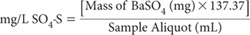

In this procedure, BaSO4 is precipitated in an acid medium near the boiling temperature by the addition of BaCl2. After a period of digestion, the precipitate is filtered, washed with water until free of Cl–, ignited or dried, and weighed as BaSO4.
This method requires a relatively high volume of SE (e.g. 50 mL), which may render it unsuitable if the quantity of SE is limited. It is also subject to errors from suspended matter, silica and substances that affect the precipitation of Ba ions (see preamble to Method 14F2 for examples). Accordingly, only use this analytical option when there are plentiful volumes of SE with low mineral contents and inconsequential concentrations of specific ion interferences such soluble silicates. It is preferable to choose an alternative analytical finish (e.g. ICPAES or IC) if SE volumes are limited and/or if significant interferences are anticipated. If soluble silicate concentrations exceed 25 mg Si/L and need to be removed because an alternative analytical finish is unavailable, follow the removal procedure outlined in Note 1.
10% Barium Chloride Solution
Dissolve 100 g barium chloride dihydrate (BaCl2.2H2O) in 1.0 L of distilled water. 1.0 mL of this reagent is capable of precipitating ≈40 mg SO4-S.
Dissolve 0.10 g methyl red sodium salt [C15H14N3O2Na] in deionised water and make to 100 mL.
10 M Hydrochloric Acid (HCl)
Silver Nitrate – Nitric Acid Reagent
Dissolve 8.5 g silver nitrate (AgNO3), add 0.5 mL of 15 M HNO3 and dilute to 500 mL with deionised water.
Select and use aliquots of SE, known to contain no particulate matter >0.20 μm. Filter to specification if necessary. If a high content (≥25 mg/L) of dissolved SiO2 is suspected, then either dilute the SE with deionised water or choose an alternative analytical finish. If dilution is used, record the ratio and modify the final calculation accordingly. If necessary, remove Si interference guided by Note 1.
Transfer 50 mL of the clarified SE into a 250 mL beaker. Adjust the acidity with a drop or two of 10 M HCl to pH 4.5–5.0, using a pH meter or to the orange colour of methyl red indicator. Add ≈1 mL of 10 M HCl, then boil the solution to coagulate colloidal particles and refilter through a Whatman No. 42 filter paper into a 250 mL beaker. Wash the filter paper with warm deionised water containing a drop or two of 10 M HCl. Boil the filtrate again and, while gently stirring, slowly add 5.0 mL of warm BaCl2 Solution until precipitation appears complete. Boil the solution for 5 min and leave to stand overnight (or at least for 2 h).
When cool, filter the solution through a Whatman No. 42 filter paper, and carefully transfer the precipitate from the beaker to the paper with warm deionised water. If any BaSO4 precipitate passes through the paper, refilter until the filtrate is clear. Test the filtrate to ensure complete precipitation of SO42– by adding more BaCl2: if no precipitate forms, discard the filtrate.
Wash the precipitate and the paper with small amounts of warm deionised water and continue doing so until the washings are free of Cl–, as indicated by testing with the AgNO3 – HNO3 Reagent.
Fold the moist filter paper around the precipitate and place in a tared silica crucible. Place the crucible in a furnace and increase the temperature gradually to allow charring of the paper. Do not let the filter paper flame. When charring has completed, ignite at 800°C for 1 h. Cool in a desiccator and weigh. Determine the weight of BaSO4 in mg.

Apply any dilution factors to the above calculation (see Note 2).
Report SO4-S/SE (mg/L) with relevant method codes. Divide by 16.03 to convert mg SO4-S/L to cmolcSO4-S/L.
1. To remove Si interference, evaporate almost to dryness (this is best performed in a platinum dish on a steam bath). Add 1.0 mL 10 M HCl, swirl to completely mix contents, then complete the process of evaporating to near dryness on the waterbath, then transfer to a laboratory oven set at 180°C and continue to evaporate to complete dryness. If there is evidence of the presence of OM at this point, char this material using the flame of a Bunsen burner. Cool, moisten the residue with deionised water and 1.0 mL 10 M HCl, then redry on a steam bath. Cool again then add 2.0 mL 10 M HCl, take up the soluble residue in hot water, and filter. Wash insoluble silica with several small portions of hot deionised water. Combine filtrate and washings but discard any insoluble residue (APHA-AWWA-WEF 2005a).
2. Should it be necessary to express results as SO42– rather than as S, replace 137.37 with 411.56 in the relevant calculation.